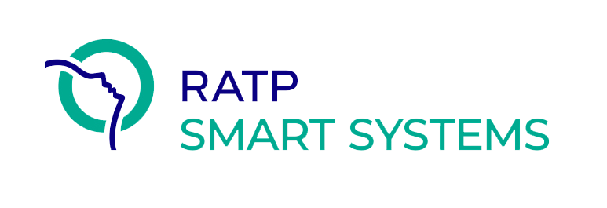

+++
title = "Keyple"
linkTitle = "Keyple"
+++
{{< blocks/cover title="Eclipse Keyple™, the first open source API for contactless ticketing and access control" image_anchor="top" height="full" color="dark" >}}
{{< /blocks/cover >}}
{{% blocks/lead color="primary" %}}
Keyple™ accelerates the integration and development of ticketing and access control applications by enabling all to implement systems based on a common, open and modular platform, while benefiting from Calypso®'s key features of reliability, security and interoperability.
{{% /blocks/lead %}}
{{% blocks/lead color="white" %}}
Solutions

{{% /blocks/lead %}}
{{% blocks/lead color="framboise" %}}
What's new?
{{% /blocks/lead %}}
{{% blocks/lead color="lightblue" %}}
Who uses Eclipse Keyple?

{{% /blocks/lead %}}
{{% blocks/lead color="orange" %}}
Want to know more?
To subscribe to the mailing list, click here
{{% /blocks/lead %}}
{{< blocks/section color="dark" >}}
{{% blocks/feature icon="fa-lightbulb" title="First Open Source project for ticketing!" %}}
The very first Open Source SDK & API for contactless ticketing and access control is now available as an Eclipse Project!
Please follow this space for updates!
{{% /blocks/feature %}}
{{% blocks/feature icon="fab fa-github" title="Contributions welcome!" url="https://github.com/eclipse/keyple" %}}
We do a [Pull Request](https://github.com/eclipse/keyple-java/pulls) contributions workflow on **GitHub**. New users are always welcome!
{{% /blocks/feature %}}
{{% blocks/feature icon="fab fa-twitter" title="Follow us on Twitter!" url="https://twitter.com/calypsonet_asso" %}}
For announcement of latest features etc.
{{% /blocks/feature %}}
{{< /blocks/section >}}